NPRG085: Theory of Programming Languages
Course introduction
Tomáš Petříček and Vít Šefl
petricek@d3s.mff.cuni.cz | sefl@ksvi.mff.cuni.cz
@tomasp.net | https://tomasp.net

Examination
To pass the course, you need to successfully pass an oral exam at the end.
Test understanding of semantics & types
- Use semantics to perform reduction
- Show that a property holds for given rules
- General questions
Practical details and arrangements
- Only topics covered during the lectures
- Extra literature is helpful but not required
- Sign up via SIS
Literature
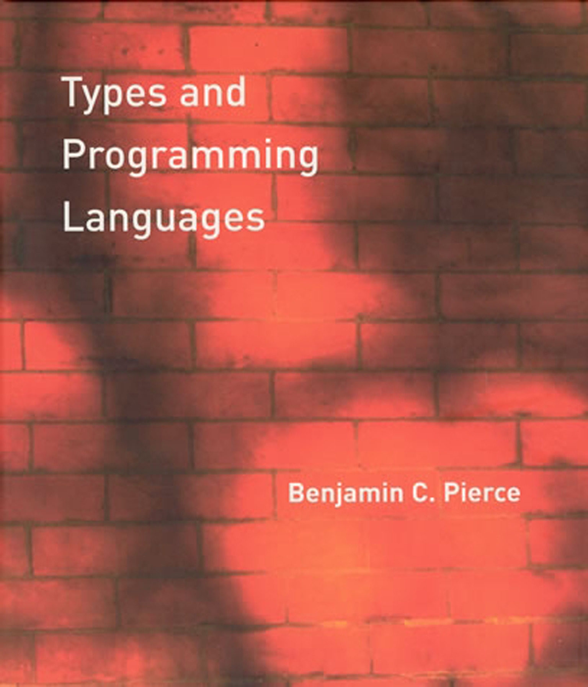
Langauge semantics
- Semantics of Programming Languages (Cambridge)
- Types and programming languages (Pierce)
Types and lambda calculus
- Practical foundations for programming languages (R. Harper)
- Software foundations (B. Yorgey et al)
- Advanced topics in types and programming languages (ed: Pierce)
- The lambda calculus: its syntax and semantics (H. P. Barendregt)
Study materials
-
The lectures will be recorded. The recordings
will be made available in some way. If there's interest, we could make a Discord server like we did last year (for Principles) and share the study materials there as well.
Goals
After the course, you should be able to:
- Define an operational model of a PL
- Add a type system to a programming language
- Read, write and use formal derivation rules
- Understand basic properties of these models & systems
- Appreciate how the simplest systems can be expressive
Goals
Type systems and semantics are deep topics and we'll only scratch the surface.
For example, we won't cover denotational semantics, axiomatic semantics, subtyping, set-theoretic types, gradual typing, etc.
-
However, the course will give you the
core tools to delve deeper.
Outline (1/2)
The imperative part of the course will mostly
be given by Tomáš; the functional part by Vít.
The current plan for this semester is:
- Intro, motivation, simple imperative language (now!)
- Refresher on semantics, lambda calculus, and types
- Simple type system for an imperative language
- Basic properties of these models
- Data types, evaluation contexts, evaluation order
- Deeper dive into lambda calculus, data via functions
Outline (2/2)
- Term representation, simply typed lambda calculus
- Church/Curry-style formulation, quantification
- Hindley-Milner type system, type inference
- Adding functions to an imperative language
- Advanced type systems (bonus topic)
- Practical applications (bonus topic)
Motivation
Why theory of programming languages
What is a language?
What is the meaning of a program
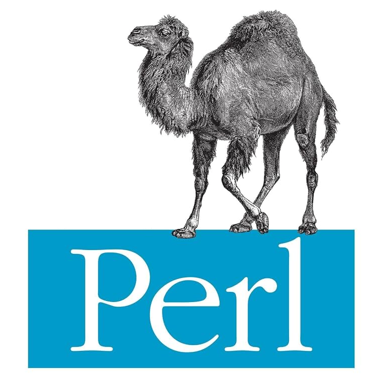
Whatever the interpreter does
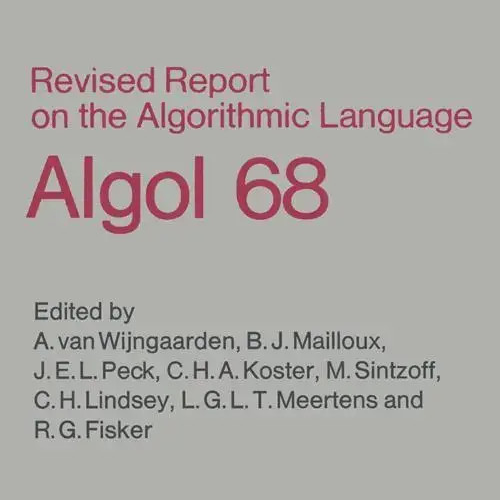
English language specification
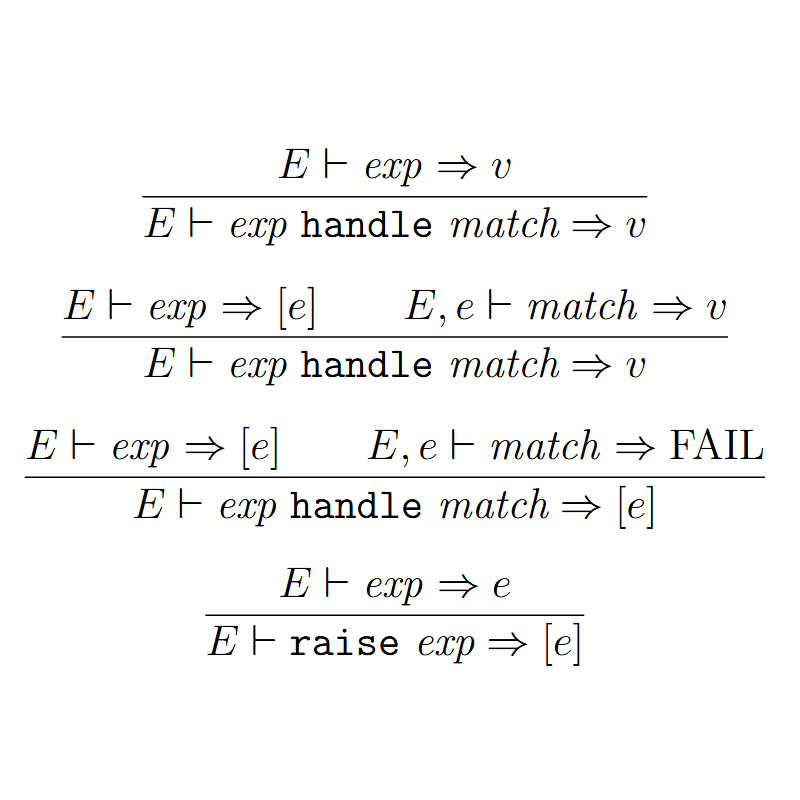
Mathematical formal definition
Mathematical formal definition
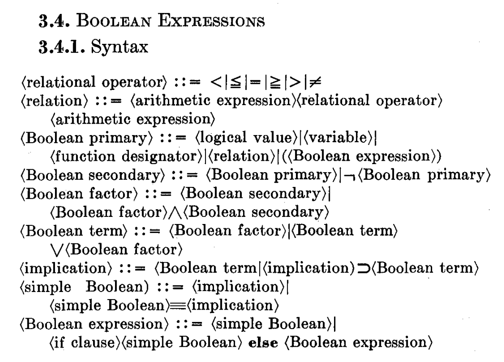
Language syntax
- What is a valid program
- BNF definition from Algol 60
- Abstract syntactic structure
Language semantics
- What happens when program runs
- This took much longer to figure out!
- Reduction rules ala lambda calculus (one option)
Type systems and safety
-
Typed and untyped languages
Define (nontrivial) set of possible values of variable -
Trapped errors vs. untrapped errors
Trapped stopped execution, untrapped go unnoticed -
Safe programming language
No program can produce an untrapped error -
Safe programming languages
Can be both typed (OCaml) and untyped (JavaScript) - See Type Systems by Luca Cardelli
Demo
Why theory of programming languages
Semantics and type-safety
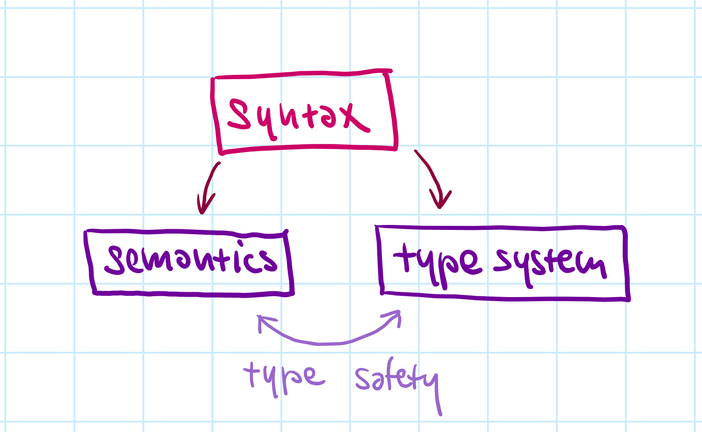
Operational semantics
- Define how programs run
- Program produces a value
Type systems
- Define what is well-typed
- No invalid operations can happen
Type-safe language
- Well-typed programs do not go wrong
- Also - determinacy, unique typing
Operational semantics
Small imperative language
// Computing a factorial
// of value in 'l1'. Stores
// the result in 'l2'.
let l1 = ref 5
let l2 = ref 1
while !l1 >= 1 do
l2 := !l2 * !l1
l1 := !l1 + -1
done
L1 language
Minimal imperative language a bit like subset of ML or F#
No normal variables!
Stores are special
and assumed (no let)
Expression-based
assign, read, if, while, sequencing, operators
Demo
Factorial in a subset of F#
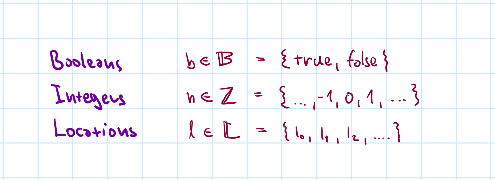
Syntax definition
Concrete primitives and abstract locations
We treat primitives
as sets and name members as \(b \in \mathbb{B}\),
\(n\in\mathbb{Z}\) and \(l\in\mathbb{L}\)
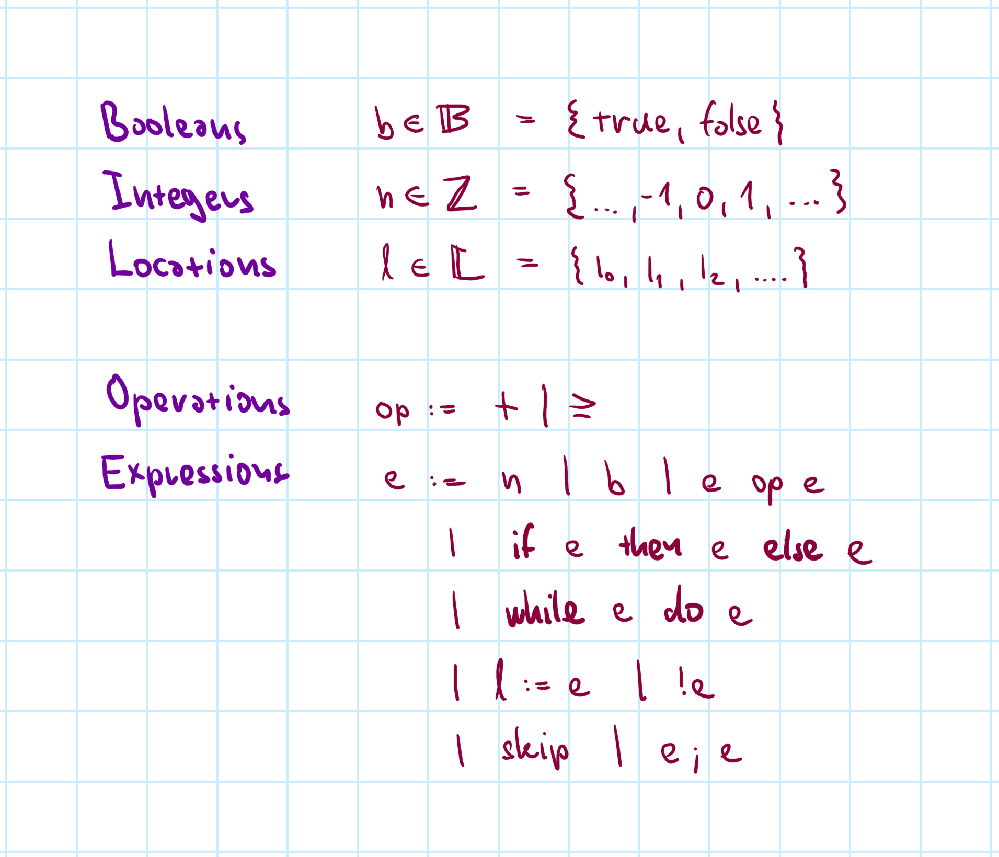
Syntax definition
BNF-like notation,
but think of it as a definition of a set.
\(:=\) defines a set
\(|\) lists options
Keywords are bold
and \(n,b,l,e,op\) are members of other sets
Modelling store
What is the evaluation state
- How does the expression \(l_1\!:=\,!l_1\!+\!1;\; !l_1\) evaluate?
- Depends on what is the value of \(l_1\) at the start!
Modelling store
- Stores \(s\) are final partial functions from \(\mathbb{L}\) to \(\mathbb{Z}\)
- Assign integer to some of the possible locations
Evaluation, revisited
- Evaluate \(l_1\!:=\,!l_1\!+\!1;\; !l_1\) with store \(s = \{ l_1 \mapsto 41 \}\)
Evaluation as transition
Program evaluates step-by-step
- One-step reduction relation \(\langle e, s \rangle \rightarrow \langle e', s' \rangle\)
- Program \(e\) with store \(s\) reduces to \(e'\) with store \(s'\)
- One step is one primitive operation!
Whole program reduction
- Keep reducing \(\langle e, s \rangle \rightarrow \ldots \rightarrow \langle e', s' \rangle\)
- Until \(e'\) is a value, i.e., \(e \in \mathbb{Z} \;\cup\; \mathbb{B} \;\cup\; \{ \texttt{skip} \}\)
- Some programs can keep reducing indefinitely!
- Some programs can get stuck, i.e., \(1 + \texttt{true}\)
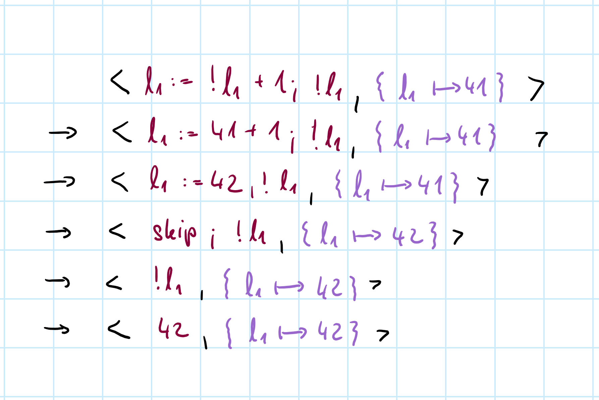
Reduction example
Proceeds step-by-step
Not how real programs run on a computer!
Formal model
Defined by a set of reduction rules
More formally
Transition system
- A set \(\textit{Config}\) and a binary relation \(\rightarrow\;\in\textit{Config}\times\!\textit{Config}\)
- In our case \(\textit{Config}=\textit{Expr}\times(\mathbb{L}\rightarrow\mathbb{Z})\)
What can happen
- Values represent results \(v \in V = \mathbb{Z} \;\cup\; \mathbb{B} \;\cup\; \{ \texttt{skip} \}\)
-
\(\langle e, s \rangle \not\rightarrow\) cannot be reduced, i.e.,
there is no \(\langle e', s' \rangle\) such that \(\langle e, s \rangle \rightarrow \langle e', s' \rangle\) - Expression is stuck if it cannot be reduced & is not a value
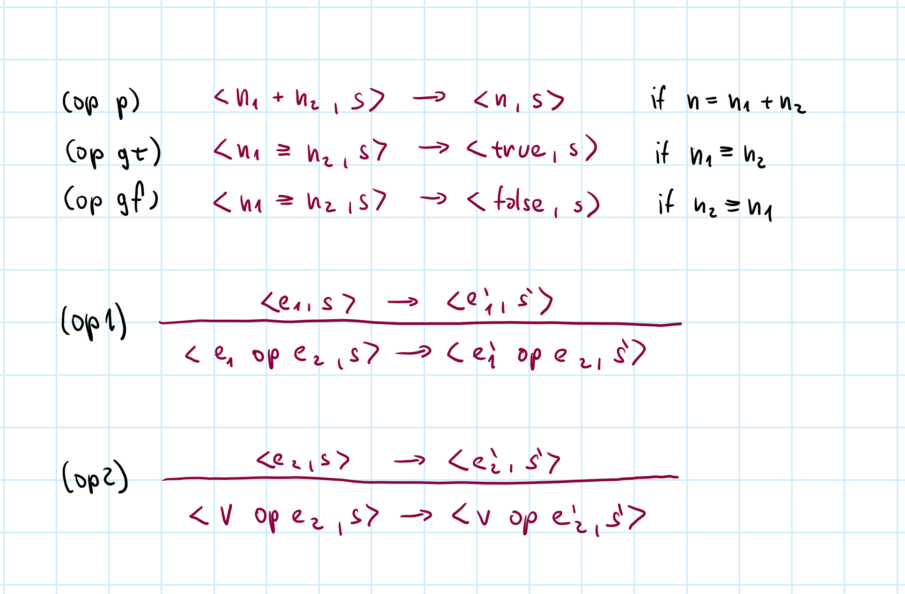
Basic rules
If the preconditions (above) and side conditions (beside) holds, transition applies
Some reductions require a derivation tree with several rules!
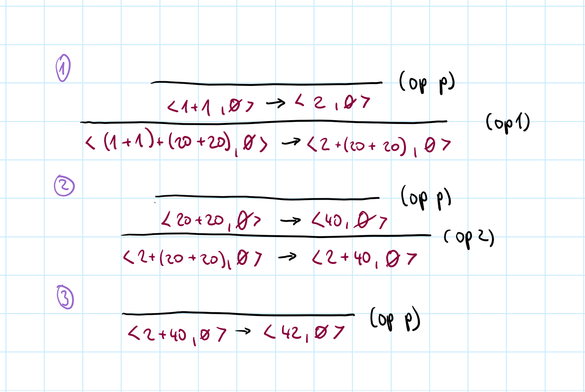
Basic example
\((1+1)+(20+20)\)
Simple enough, but what exact steps?
Evaluation order can matter in subtle ways!
For example C pattern
if (nd && nd->next)
nd->next = NULL;
Store and sequencing rules
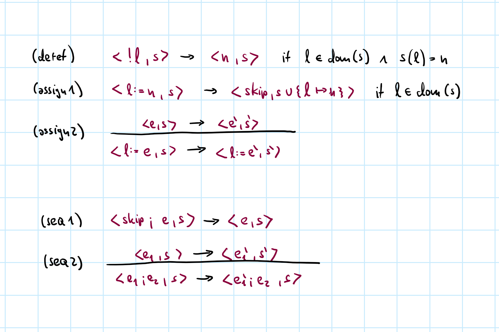
Conditionals and while rules
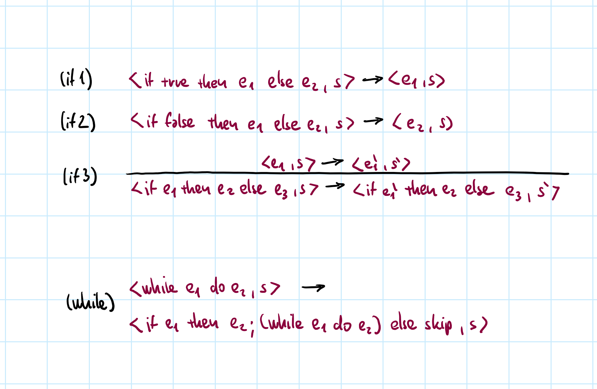
Reduction
Modelling program execution
- Reductions must exactly follow rules!
- Details matter in subtle ways (TypeScript..)
- Evaluation order, store preconditions, & more
- Sequence of steps \(\rightarrow\) with derivation trees
- Learn how to apply rules!
Conclusions
Introduction & small imperative language
Conclusions
- Recordings will appear on the course web page
- Operational semantics to model execution
- Types and properties to follow soon
- Functional features based on lambda calculus
- Types are more than sets of values